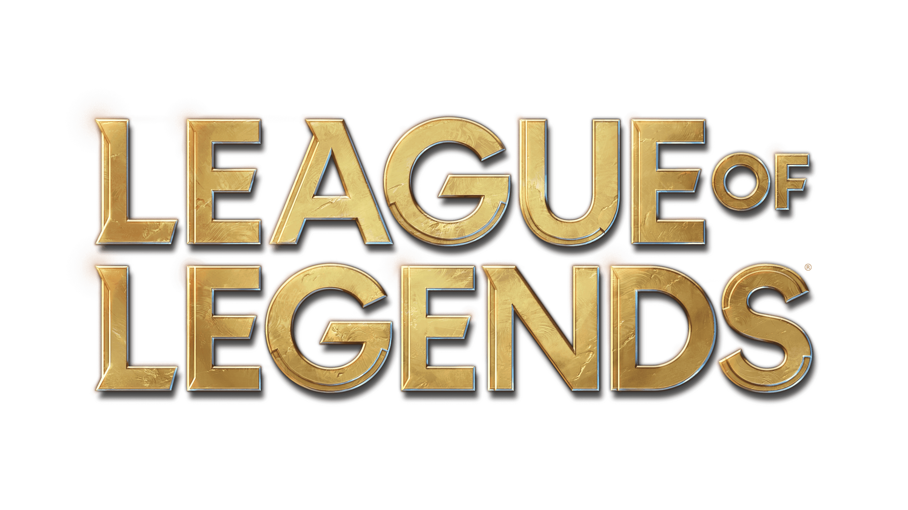

AHRI
La vastaya de nueve colasAhri puede moldear la magia en orbes de energía pura. Se divierte jugueteando con su presa y manipulando sus emociones, antes de devorar su esencia vital. A pesar de su naturaleza predadora, conserva cierta empatía porque recibe destellos de los recuerdos de cada alma que consume.